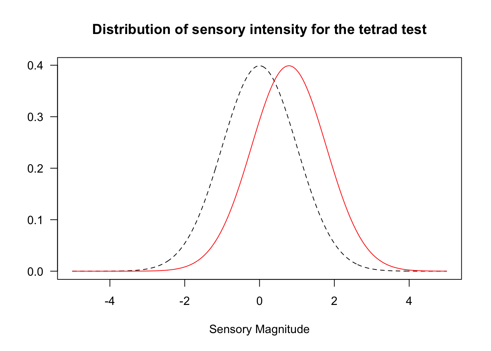

kopi <- read.csv("data/kasus1_tetrad_kopi.csv")
head(kopi)Kasus 1 · Uji Tetrad
Mengurangi gula aren pada kopi susu — apakah kemanisannya berubah?
Cerita kasus
Kedai kopi “Kopi Lereng” di Yogyakarta ingin mengurangi gula pada menu andalannya, es kopi susu gula aren. Tim R&D membuat dua formula baru:
- F20 — gula aren dikurangi 20%, kekurangannya diganti stevia.
- F40 — gula aren dikurangi 40%, kekurangannya diganti stevia.
Pemilik kedai hanya punya satu syarat: pelanggan tidak boleh merasakan kopi menjadi kurang manis atau lebih manis. Atribut lain (aroma kopi, rasa susu) sudah dicek oleh tim R&D dan dianggap setara.
Tujuan uji: menentukan apakah konsumen dapat membedakan kemanisan formula baru dengan formula asli.
Desain uji
Uji tetrad dipilih karena lebih sensitif daripada uji segitiga, padahal peluang menebaknya sama (1/3). Artinya, dengan jumlah panelis yang sama, tetrad lebih mampu menangkap perbedaan kecil.
- Setiap panelis menerima 4 gelas: 2 gelas formula asli (A) dan 2 gelas formula baru (B).
- Ada 6 kemungkinan urutan penyajian: AABB, ABAB, ABBA, BAAB, BABA, BBAA. Masing-masing dipakai sama banyak dan dibagikan secara acak.
- Instruksi: “Kelompokkan keempat sampel menjadi dua pasang berdasarkan kemiripan rasa manis.”
- Jawaban benar jika kedua sampel A berada dalam satu kelompok (otomatis kedua B di kelompok lain).
- 48 konsumen menguji F20 dan 48 konsumen lain menguji F40.
TipTetrad di buku vs. di kasus ini
Meilgaard dkk. (Bagian 8.3) juga menjelaskan versi specified tetrad: panelis diminta memilih dua sampel yang paling manis. Peluang menebaknya 1/6. Di kasus ini kita memakai versi pengelompokan (seperti lembar uji Gambar 8.2), dengan peluang menebak 1/3. Versi specified muncul di Tantangan 1.4.
Langkah 1 — Membaca data
Arti kolom:
| Kolom | Arti |
|---|---|
panelis |
kode panelis |
formula |
formula yang diuji (F20 atau F40) |
urutan |
urutan penyajian (A = asli, B = formula baru) |
kode_A, kode_B |
kode 3 digit untuk sampel A dan B |
urutan_kode |
kode sampel dari kiri ke kanan di nampan |
kelompok_1, kelompok_2 |
jawaban panelis |
benar |
1 = pengelompokan benar, 0 = salah |
Kita mulai dengan F20 saja.
f20 <- kopi %>% filter(formula == "F20")
nrow(f20)[1] 48Langkah 2 — Cek desain penyajian
Sebelum menganalisis, selalu cek apakah urutan penyajian seimbang.
table(f20$urutan)
AABB ABAB ABBA BAAB BABA BBAA
8 8 8 8 8 8 Keenam urutan muncul masing-masing 8 kali → desain seimbang ✔️
Langkah 3 — Hitung jumlah jawaban benar
benar <- sum(f20$benar)
total <- nrow(f20)
benar[1] 21total[1] 48Jika panelis hanya menebak, kita berharap sekitar 1/3 × 48 = 16 jawaban benar. Kita mendapat 21. Apakah selisih ini cukup besar untuk disebut berbeda?
Langkah 4 — Uji perbedaan dengan discrim()
Satu fungsi dari paket sensR sudah mengerjakan semuanya:
hasil_f20 <- discrim(benar, total, method = "tetrad")
hasil_f20
Estimates for the tetrad discrimination protocol with 21 correct
answers in 48 trials. One-sided p-value and 95 % two-sided confidence
intervals are based on the 'exact' binomial test.
Estimate Std. Error Lower Upper
pc 0.4375 0.0716 0.3333 0.5882
pd 0.1562 0.1074 0.0000 0.3823
d-prime 0.7853 0.2944 0.0000 1.3231
Result of difference test:
'exact' binomial test: p-value = 0.086
Alternative hypothesis: d-prime is greater than 0 Cara membaca hasil
| Baris | Arti |
|---|---|
| pc | proporsi jawaban benar yang teramati (21/48) |
| pd | proporsi panelis yang benar-benar bisa membedakan (setelah dikoreksi tebakan) |
| d-prime (d′) | ukuran besar perbedaan sensori menurut model Thurstonian. Tidak tergantung metode uji, jadi bisa dibandingkan antar-metode |
| p-value | peluang mendapat ≥ 21 jawaban benar jika sebenarnya tidak ada perbedaan |
Nilai p = 0.086 > 0,05, jadi tidak ada bukti bahwa konsumen dapat membedakan kemanisan F20 dari formula asli.
plot(hasil_f20)
Langkah 5 — Apakah F20 boleh disebut “sama manis”?
Hati-hati! Tidak signifikan bukan berarti sama. Bisa jadi panelis kita terlalu sedikit untuk mendeteksi perbedaan. Untuk menyatakan “sama”, kita harus melakukan uji kemiripan.
Sebelum uji dilakukan, pemilik kedai menetapkan batas: “Saya bisa terima kalau paling banyak 20% pelanggan bisa membedakan.” Jadi pd₀ = 0,20.
- H₀: pd ≥ 0,20 (perbedaannya terlalu besar)
- H₁: pd < 0,20 (cukup mirip)
kemiripan_f20 <- discrim(benar, total, method = "tetrad",
test = "similarity", pd0 = 0.20)
kemiripan_f20
Estimates for the tetrad discrimination protocol with 21 correct
answers in 48 trials. One-sided p-value and 95 % two-sided confidence
intervals are based on the 'exact' binomial test.
Estimate Std. Error Lower Upper
pc 0.4375 0.0716 0.3333 0.5882
pd 0.1562 0.1074 0.0000 0.3823
d-prime 0.7853 0.2944 0.0000 1.3231
Result of similarity test:
'exact' binomial test: p-value = 0.3986
Alternative hypothesis: pd is less than 0.2 Nilai p = 0.399 → kita tidak bisa menyimpulkan bahwa F20 mirip. Perhatikan juga selang kepercayaan 95% untuk pd: batas atasnya 0.38, artinya mungkin saja hingga sekitar 38% konsumen bisa membedakan.
PentingKesimpulan sementara
Uji perbedaan tidak signifikan, tetapi uji kemiripan juga tidak signifikan. Hasilnya belum meyakinkan — bukan “sama”, bukan juga “berbeda”. Penyebab utamanya: jumlah panelis kurang.
Langkah 6 — Seberapa kuat uji kita?
Power adalah peluang uji kita mendeteksi perbedaan jika perbedaan itu memang ada. Misalkan perbedaan yang dianggap penting adalah d′ = 1:
d.primePwr(d.primeA = 1, sample.size = 48, method = "tetrad")[1] 0.7372505Dengan 48 panelis, peluang kita menangkap perbedaan sebesar d′ = 1 hanya sekitar 74%.
Laporan singkat (contoh)
Uji tetrad dengan 48 konsumen menunjukkan bahwa 21 panelis mengelompokkan sampel dengan benar (pc = 0,44; d′ = 0,79; p = 0,086). Tidak ada bukti perbedaan kemanisan antara F20 dan formula asli pada α = 0,05. Namun uji kemiripan (pd₀ = 0,20) juga tidak signifikan (p = 0,40), sehingga kesetaraan kemanisan belum dapat dinyatakan. Disarankan menambah jumlah panelis.
Tantangan
Kerjakan tanpa melihat skrip jawaban. Kalian cukup memodifikasi skrip di atas.
Tantangan 1.1: Formula F40
Lakukan analisis lengkap (Langkah 2–4) untuk formula F40.
- Berapa jumlah jawaban benar? Berapa nilai pc, pd, d′, dan p?
- Apa kesimpulan kalian untuk pemilik kedai?
- Bandingkan d′ dari F20 dan F40. Apakah urutannya masuk akal secara formulasi?
Tantangan 1.2: Berapa panelis yang dibutuhkan?
Pemilik kedai ingin mengulang uji kemiripan untuk F20 dengan pd₀ = 0,20, α = 0,05, dan power 80%, dengan asumsi bahwa sebenarnya tidak ada perbedaan (pd = 0).
Berapa panelis yang dibutuhkan?
Petunjuk: cari fungsi di sensR yang namanya berakhiran SS (sample size). Ingat bahwa peluang menebak pada tetrad adalah 1/3.
Tantangan 1.3: Mengapa tetrad, bukan segitiga?
- Hitung berapa panelis yang dibutuhkan untuk mendeteksi perbedaan sebesar d′ = 1 (α = 0,05, power 80%) dengan uji tetrad, lalu dengan uji segitiga.
- Gunakan d′ dari F40 (Tantangan 1.1). Berapa proporsi jawaban benar yang diharapkan jika F40 diuji dengan uji segitiga?
- Jelaskan dalam 2–3 kalimat mengapa tetrad lebih efisien, padahal peluang menebaknya sama (1/3).
Petunjuk: lihat ?d.primeSS dan ?psyfun.
Tantangan 1.4: Versi specified tetrad dari buku
Tim R&D mengulang uji F40 dengan 48 konsumen baru, tetapi kali ini memakai versi specified tetrad: “Pilih dua sampel yang paling manis.” Hasilnya:
- 15 panelis memilih kedua sampel asli sebagai yang paling manis,
- 5 panelis memilih kedua sampel F40,
- 28 panelis memilih satu asli dan satu F40.
Tim R&D sudah menduga F40 kurang manis, jadi ujinya satu sisi.
- Jika panelis hanya menebak, berapa peluang mereka memilih tepat kedua sampel asli? (Ada berapa cara memilih 2 dari 4 sampel?)
- Uji dengan fungsi R yang sesuai. Apakah F40 nyata kurang manis?
- Berapa jumlah minimum jawaban yang dibutuhkan agar signifikan pada α = 0,05 untuk 48 panelis?